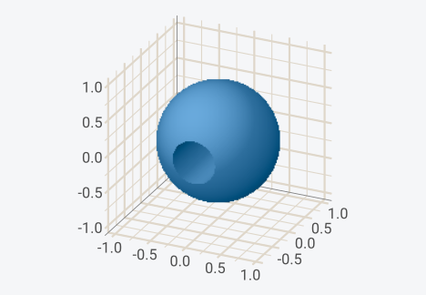
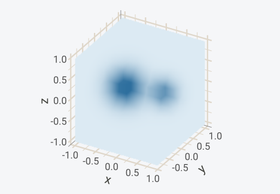
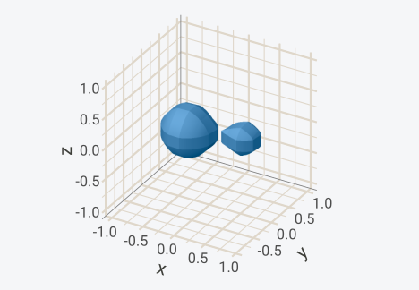
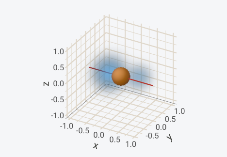
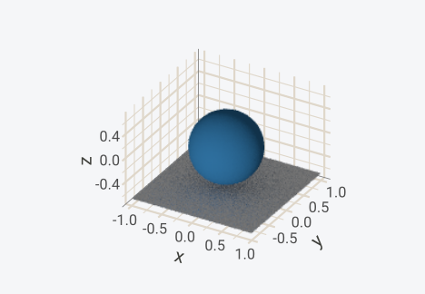
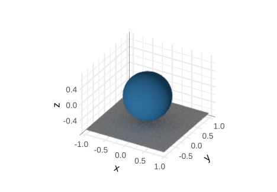

Ray marching evaluates a field along each viewing ray to find a surface or accumulate colour through a volume. This article renders both kinds of field, combines them with other layers and adds diffuse light transport with the native path tracer. Installation is covered in Get started.
Tracing a distance surface
A signed distance function (SDF) gives negative values inside a shape, zero on its surface and positive values outside. Build a sphere with a cylindrical hole by subtracting a capsule, a cylinder with rounded ends. The constructors and shape algebra are described in Implicit surfaces.
ball <- sdf_sphere(radius = 0.8)
hole <- sdf_capsule(c(0, -1.2, 0), c(0, 1.2, 0), radius = 0.3)
shape <- ball - holeSet the three scale limits explicitly to bound the field. The trace
mode of geom_isofunction_3d() finds the zero surface
directly at each raster sample. Sphere tracing advances by a
conservative distance bound, following Hart 1996.
surface <- ggplot() +
geom_isofunction_3d(fun = shape, render = "trace", fill = "#2E6F9E") +
xlim(-1, 1) + ylim(-1, 1) + scale_z_continuous(limits = c(-1, 1))
surface + coord_3d(azimuth = -65, elevation = 25,
backend = backend_3d("raster", dpi = 60, antialias = 1))
Trace mode requires an SDF object and an opaque fill. It uses
transformed scale coordinates, the panel clipping box and depth
occlusion. Control the surface residual with
trace_tolerance and the maximum steps per ray with
trace_steps. Mesh mode accepts ordinary R functions and
produces triangles for the model exporters in Exporting plots and scenes.
Integrating a scalar volume
A scalar volume has one value at every combination of x, y and z coordinates. The complete rectilinear grid can have unequal spacing on its axes; rows are matched by coordinate. The example below evaluates a smooth field on a 12 by 12 by 12 grid, with a larger concentration left of centre and a smaller one to its right.
a <- seq(-1, 1, length.out = 12)
field <- expand.grid(x = a, y = a, z = a)
field$value <- with(field,
exp(-8 * ((x + 0.35)^2 + y^2 + z^2)) +
0.7 * exp(-14 * ((x - 0.45)^2 + (y - 0.2)^2 + z^2)))
range(field$value)
#> [1] 5.240798e-14 8.356223e-01Emission-absorption rendering accumulates colour and extinction along
a ray. The transfer function maps scalar values to colours and
extinction coefficients, following the optical model reviewed by Max 1995. The opacity ramp
below maps the minimum field value to zero extinction and the maximum to
four per transformed data unit. A constant coefficient of four across a
distance of one transmits exp(-4) of the incoming
light.
volume <- ggplot(field, aes(x, y, z = z, value = value))
volume + geom_volume_3d(opacity = c(0, 4),
colours = c("#DCEAF3", "#2E6F9E"), samples = 48) +
coord_3d(backend = backend_3d("raster", dpi = 60, antialias = 1))
The renderer interpolates values trilinearly between grid samples and
integrates colour in linear light. Increase samples to
refine absorption integration along the volume diagonal. Both colour and
opacity can also be functions of scalar values; each is evaluated into a
transfer table before rendering.
Maximum intensity
Maximum-intensity projection (MIP) shows the greatest scalar value encountered along each ray. This helps locate concentrated values through the full depth of a field. Colour and opacity are evaluated at that maximum.
volume + geom_volume_3d(mode = "mip", opacity = 1,
colours = c("#DCEAF3", "#2E6F9E")) +
coord_3d(backend = backend_3d("raster", dpi = 60, antialias = 1))
The maximum is found from the stationary points of the interpolated field in each crossed cell. The absorption sampling count has no effect on this mode.
A volume isosurface
An isosurface consists of points at a chosen scalar value. Set the level explicitly to show the boundary around the two concentrations. The first intersection along each ray supplies the visible surface and its normal.
volume + geom_volume_3d(mode = "iso", levels = 0.3,
colours = c("#2E6F9E", "#2E6F9E")) +
coord_3d(backend = backend_3d("raster", dpi = 60, antialias = 1))
Root finding uses the cubic restriction of the trilinear field within
each cell, including roots between cell endpoints of the same sign. The
level defaults to the midpoint of the scalar range. Use the
mesh-producing geom_isosurface_3d() when you need exported
triangle geometry.
Combining image and vector layers
Traced surfaces and volumes share depth with ordinary raster geometry. Opaque surfaces stop the volume integral. Transparent raster fragments split the integral at their depths, and overlapping absorption volumes contribute emission and extinction jointly.
This scene places a small traced sphere inside the volume and sends a red line through both. Mark the line for raster rendering so every fragment is composited with the field at its depth.
line <- data.frame(x = c(-1, 1), y = 0, z = 0)
mixed <- volume + geom_volume_3d(opacity = c(0, 2), samples = 48) +
geom_isofunction_3d(fun = sdf_sphere(radius = 0.25), data = data.frame(id = 1),
render = "trace", fill = "#9E5E0F", inherit.aes = FALSE) +
geom_path_3d(aes(x, y, z = z), data = line, inherit.aes = FALSE,
colour = "#B5342B", linewidth = 1, raster = TRUE)
mixed + coord_3d(backend = backend_3d("raster", dpi = 60, antialias = 1))Vector and hybrid panels place the traced fields as an image. Ordinary vector primitives are clipped against the depth where that image reaches half its opacity. This depth gives an occlusion boundary for the vector line. Use raster rendering for a line that needs continuous attenuation inside a volume.
vector_line <- volume + geom_volume_3d(opacity = c(0, 2), samples = 48) +
geom_isofunction_3d(fun = sdf_sphere(radius = 0.25), data = data.frame(id = 1),
render = "trace", fill = "#9E5E0F", inherit.aes = FALSE) +
geom_path_3d(aes(x, y, z = z), data = line, inherit.aes = FALSE,
colour = "#B5342B", linewidth = 1)
vector_line + coord_3d(backend = backend_3d("vector", dpi = 60,
antialias = 1))
Select hybrid rendering to rasterize marked geometry and keep the
remaining layers as vectors. The same traced image participates in the
panel’s depth test. Hidden strokes behind traced surfaces currently
support solid hiding; hidden = "dashed" does not produce
dashed strokes there.
vector_line + coord_3d(backend = backend_3d("hybrid", dpi = 60,
antialias = 1))
Diffuse path tracing
Path tracing samples light paths through successive surface interactions. The native backend adds diffuse interreflection, soft shadows from a distant disk and thin-lens depth of field. Its light transport follows Pharr, Jakob and Humphreys 2023.
Build a sphere resting above a floor. The ambient light supplies a uniform environment, and the diffuse contribution supplies the distant light.
floor <- expand.grid(x = c(-1, 1), y = c(-1, 1))
floor$z <- -0.65
lit <- ggplot() +
geom_isofunction_3d(fun = sdf_sphere(radius = 0.55), render = "trace",
fill = "#2E6F9E") +
geom_surface_3d(aes(x, y, z = z), data = floor, fill = "grey85") +
xlim(-1, 1) + ylim(-1, 1) + scale_z_continuous(limits = c(-0.7, 0.7))
tracer <- backend_3d("pathtrace", samples = 8, bounces = 3, seed = 42,
dpi = 60, antialias = 1, progressive = TRUE, batch_size = 4)Each redraw adds eight samples per pixel to this backend’s accumulator. Reusing the same backend and scene continues the sequence; changing geometry, camera, lighting or image dimensions resets it. The seed fixes the random sequence independently of batch size and thread count.
traced <- lit + coord_3d(backend = tracer, aspect = "data",
light = light_3d(light_directional(c(-1, -1, 2), intensity = 0.8), ambient = 0.2))
traced
Draw the same object again to accumulate sixteen samples per pixel.
Increase the sample count for final output; these small images keep the
example quick. For reproducible independent renders, keep the seed fixed
and use the default progressive = FALSE.
traced
Set a positive aperture for depth of field, with the
focal plane controlled by focus in aspect-scaled model
units. Its default focuses on the camera target. The path tracer accepts
meshes and opaque traced SDF surfaces; scalar volumes require the
raster, vector or hybrid backends described above.
Where next
Output backends: choose resolution and save an image.
Inside the Thurston geometries: follow curved viewing rays from an observer inside a geometry.